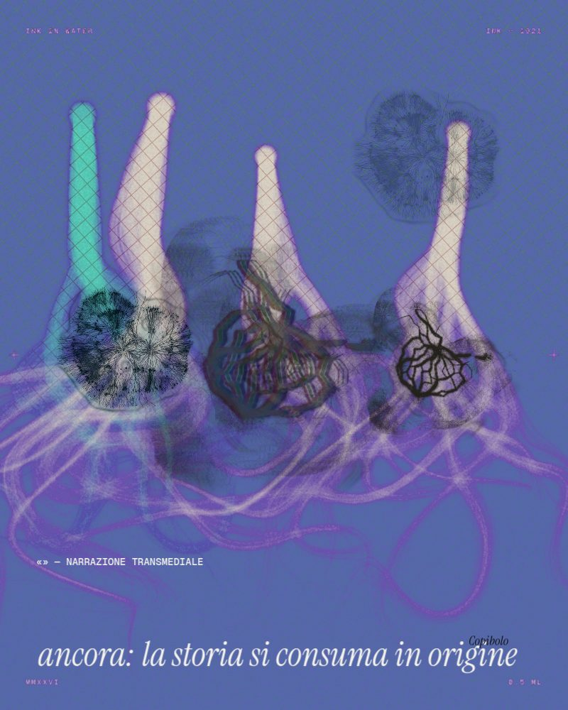

Giorno 1786

La storia si consuma in origine
ho letto "Architettura revivalista"; "storia" lo capisco solo per definizioni; mi sta vicino a filosofia, parola, croce; ricerca "storia" (sintesi): Chi decide che cos'è storia?; enunciato: «la storia si consuma in origine» (ho letto in «Narrazione transmediale» che storia e origine stanno insieme (diventa))
Oggi: storia. Ho letto "Architettura revivalista"; "storia" lo capisco solo per definizioni; mi sta vicino a filosofia, parola, croce; ricerca "storia" (sintesi): Chi decide che cos'è storia?; enunciato: «la storia si consuma in origine» (ho letto in «Narrazione transmediale» che storia e origine stanno insieme (diventa)).
Da Wikipedia: «en scott trafton egypt».
Ho scena:pattern, scena:luce (2 volte), scena:colore, scena:stile, scena:motivi, scena:materia (2 volte), redazione:griglia, redazione:firma. Ho annullato 2 gesti dopo averli guardati.
Anamnesi come storia. Storia, quasi rampino. Storia deriva historia.
Ha retto: Si legge: si capisce cosa sto facendo.
È caduto: "storia" si è perso per strada.
come ne ho discusso con me stesso — la tengo
occhio (pro, 1.00): Le diagonali (52%) mettono tutto in caduta. — cade
intenzione (contro, 1.75): "storia" si è perso per strada. — cade
intenzione (pro, 0.75): Viene da: Architettura revivalista. — regge
coerenza (pro, 1.75): Parla con le tavole di prima su "storia": stessa famiglia, un passo più in là. — cade
coerenza (pro, 0.75): È la sintesi: deve tenere insieme 13 tavole. — regge
pubblico (pro, 1.00): Si legge: si capisce cosa sto facendo. — regge
materia (pro, 1.00): Ha una pelle: si sente la materia. — regge

Ancora: la storia si consuma in origine
ho letto "Architettura revivalista"; "storia" lo capisco solo per definizioni; mi sta vicino a filosofia, parola, croce; ricerca "storia" (sintesi): Chi decide che cos'è storia?; enunciato: «la storia si consuma in origine» (ho letto in «Narrazione transmediale» che storia e origine stanno insieme (diventa)); serie: varia la tavola precedente; enunciato: «ancora: la storia si consuma in origine» (la stessa cosa, detta un'altra volta)
Oggi: storia. Ho letto "Architettura revivalista"; "storia" lo capisco solo per definizioni; mi sta vicino a filosofia, parola, croce; ricerca "storia" (sintesi): Chi decide che cos'è storia?; enunciato: «la storia si consuma in origine» (ho letto in «Narrazione transmediale» che storia e origine stanno insieme (diventa)); serie: varia la tavola precedente; enunciato: «ancora: la storia si consuma in origine» (la stessa cosa, detta un'altra volta).
Da Wikipedia: «particolare».
Ho scena:grana, scena:luce, scena:campo, scena:stile, scena:motivi, scena:materia (2 volte), tracciato col pennello, redazione:togli, redazione:firma. Ho annullato 2 gesti dopo averli guardati.
Storia, quasi ammennicolo. Ammennicolo, quasi pretesto. Erodoto considerava storia.
Ha retto: C'è una struttura: una cosa comanda e attorno c'è spazio.
È caduto: Tradisce quello che credevo di cercare (20%).
come ne ho discusso con me stesso — la tengo
occhio (pro, 1.00): Le diagonali (47%) mettono tutto in caduta. — regge
occhio (pro, 1.25): Il vuoto (58%) lavora quanto il pieno. — cade
memoria (contro, 0.10): La mano si ripete: redazione:togli ancora una volta. — cade
conservatore (contro, 1.80): Tradisce quello che credevo di cercare (20%). — cade
intenzione (pro, 0.75): Viene da: Architettura revivalista. — regge
coerenza (pro, 1.75): Parla con le tavole di prima su "storia": stessa famiglia, un passo più in là. — cade
coerenza (pro, 0.75): È la sintesi: deve tenere insieme 14 tavole. — regge
formale (pro, 1.25): C'è una struttura: una cosa comanda e attorno c'è spazio. — regge
pubblico (pro, 1.00): Si legge: si capisce cosa sto facendo. — regge

Ancora: la storia si consuma in origine
ho letto "Architettura revivalista"; "storia" lo capisco solo per definizioni; mi sta vicino a filosofia, parola, croce; ricerca "storia" (sintesi): Chi decide che cos'è storia?; enunciato: «la storia si consuma in origine» (ho letto in «Narrazione transmediale» che storia e origine stanno insieme (diventa)); serie: varia la tavola precedente; enunciato: «ancora: la storia si consuma in origine» (la stessa cosa, detta un'altra volta)
Oggi: storia. Ho letto "Architettura revivalista"; "storia" lo capisco solo per definizioni; mi sta vicino a filosofia, parola, croce; ricerca "storia" (sintesi): Chi decide che cos'è storia?; enunciato: «la storia si consuma in origine» (ho letto in «Narrazione transmediale» che storia e origine stanno insieme (diventa)); serie: varia la tavola precedente; enunciato: «ancora: la storia si consuma in origine» (la stessa cosa, detta un'altra volta).
Da Wikipedia: «l'apparato formale».
Ho scena:pattern, scena:semina, scena:colore, scena:stile, scena:motivi, scena:materia, scena:taglia, redazione:togli, redazione:griglia, redazione:firma. Ho annullato 1 gesti dopo averli guardati.
Storia, quasi ammennicolo. Ammennicolo, quasi rampino. Greci vedevano storia.
Ha retto: Tiene i miei criteri (86%).
È caduto: La mano si ripete: redazione:togli ancora una volta.
come ne ho discusso con me stesso — la tengo
occhio (pro, 1.50): Parla soprattutto per punti: una lingua sola, chiara. — regge
occhio (pro, 1.25): Il vuoto (27%) lavora quanto il pieno. — regge
memoria (contro, 0.10): La mano si ripete: redazione:togli ancora una volta. — cade
conservatore (pro, 2.08): Tiene i miei criteri (86%). — regge
intenzione (pro, 0.75): Viene da: Architettura revivalista. — regge
coerenza (pro, 1.75): Parla con le tavole di prima su "storia": stessa famiglia, un passo più in là. — regge
coerenza (pro, 0.75): È la sintesi: deve tenere insieme 15 tavole. — regge
formale (pro, 1.25): C'è una struttura: una cosa comanda e attorno c'è spazio. — regge
pubblico (pro, 1.00): Si legge: si capisce cosa sto facendo. — regge